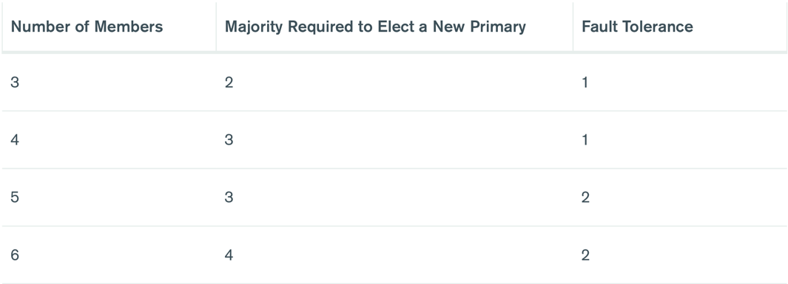
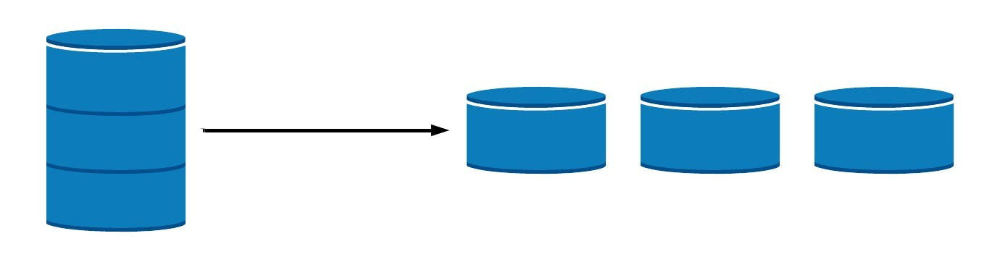

MongoDB replication and sharding
What is replication
Process of data synchronization between MongoDB instances
Why Replication?
- Data redundancy
- High availability
- Easier recovering from hardware failure and service interruptions
- Read scaling
- Easier backuping and maintenance
What is replica set
A replica set in MongoDB is a group of mongod processes that maintain the same data set.
How does replication work

Replica set members
Primary
The primary is the only member in the replica set that receives write operations. MongoDB applies write operations on the primary and then records the operations on the primary's oplog. Secondary members replicate this log and apply the operations to their data sets.
Secondary
A secondary maintains a copy of the primary's data set. To replicate data, a secondary applies operations from the primary's oplog to its own data set in an asynchronous process.
Arbiter
In some circumstances (such as you have a primary and a secondary but cost constraints prohibit adding another secondary), you may choose to add an arbiter to your replica set. An arbiter does not have a copy of the data set and cannot become a primary. However, an arbiter participates in elections for primary.
Heartbeat
Heartbeat is the process that identifies the current status of a MongoDB node in a replica set.
Replica Set Elections
Replica sets use elections to determine which set member will become primary. Replica sets can trigger an election in response to a variety of events, such as:
- Adding a new node to the replica set
- initiating a replica set
- performing replica set maintenance using methods such as rs.stepDown() or rs.reconfig()
- the secondary members losing connectivity to the primary for more than the configured timeout (10 seconds by default).

Fault tolerance
Fault tolerance for a replica set is the number of members that can become unavailable and still leave enough members in the set to elect a primary.
Arbiter

Member priority
The priority settings of replica set members affect both the timing and the outcome of elections for primary.
Replica set methods
Sharding
What is sharding
Sharding is a method for distributing data across multiple machines. MongoDB uses sharding to support deployments with very large data sets and high throughput operations.
Why sharding?
- Horizontal scaling
- Increased Read/Write Throughput
- Increased Storage Capacity
- High Availability
Vertical vs horizontal scaling

Disadvantages of Sharding
- Query Overhead
- Complexity of Administration
- Increased Infrastructure Costs
Cluster members
- Shard: Each shard contains a subset of the sharded data. Each shard can be deployed as a replica set to provide redundancy and high availability. Together, the cluster’s shards hold the entire data set for the cluster.
- Router: The
mongosacts as a query router, providing an interface between client applications and the sharded cluster. - Config Servers: Config servers store metadata and configuration settings for the cluster. They are also deployed as a replica set.

Shard key
The shard key is either a single indexed field or multiple fields covered by a compound index that determines the distribution of the collection's documents among the cluster's shards.